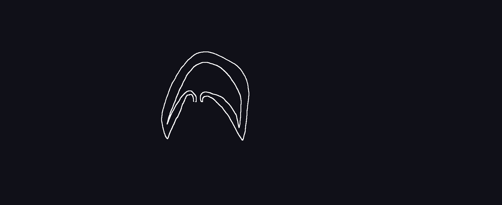

Testszerveződés
Csíralemez sejtjei tovább differenciálódnak.
-
Külső csíralemez:
- kültakaró
- idegrendszer
-
Középső csíralemez
- keringés
- kiválasztás szervei
- ivarszervek
- váz rendszer
- izom rendszer
-
Belső csíralemez
- tápcsatorna
- légzés szervrendszer
Állatok törzsszerveződése

Szivacsok
Több millió évvel ezelőtt jelentek meg, azóta változatlan formában jelen vannak
Tőlük nem származtatunk más állatcsoportot, ezért evolúciós zsákutcának tekintjük őket.
Testszerveződés
Valódi szövetek nincsenek.
Telepesek, álszövetes
Részleges munkamegosztás sejtek között
Felépítés
Képviselőik
-
Mészszivacsok
- Mészből van a vázuk
- Telepet képeznek
-
Retekszivacsok
- Magyar o.-n is tavakban fordul elő
- Vénuszkosárka
- Kovaszivacs: vázuk kovát tartalmaz
- Szaru szivacsok
- Balatoni szivacs ilyen
- telepes
Csalánozók
Testszerveződés
- 2 csíralemezes szerveződési szint, valódi szövetes
- testüreg nélküli állatok
-
Például:
- Medúzák
- Hidrák
- Sugaras szimeetria
Alakjuk
Medúza alak
- Szájnyílás lefelé néz
- tapogató is lefele néz
- Lebegő életmód

Polip alak
- szájnyílás felfelé néz
- tapogatók is felfele néznek
- Helytülő, bukfencező mozgás
Rakéta elv alapján mozognak
Testfelépítés
Ivarsejtek
mirigysejt
Emésztő nedvet termel, ami az űrbélbe ürül: sejten kívüli emésztés
emésztő sejt
Bekebelezéssel veszi fel a táplálékot: sejten belüli emésztés
Kettős emésztés